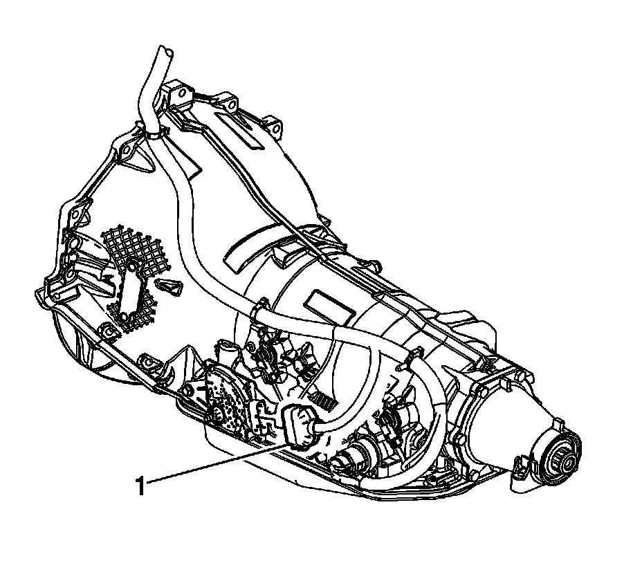
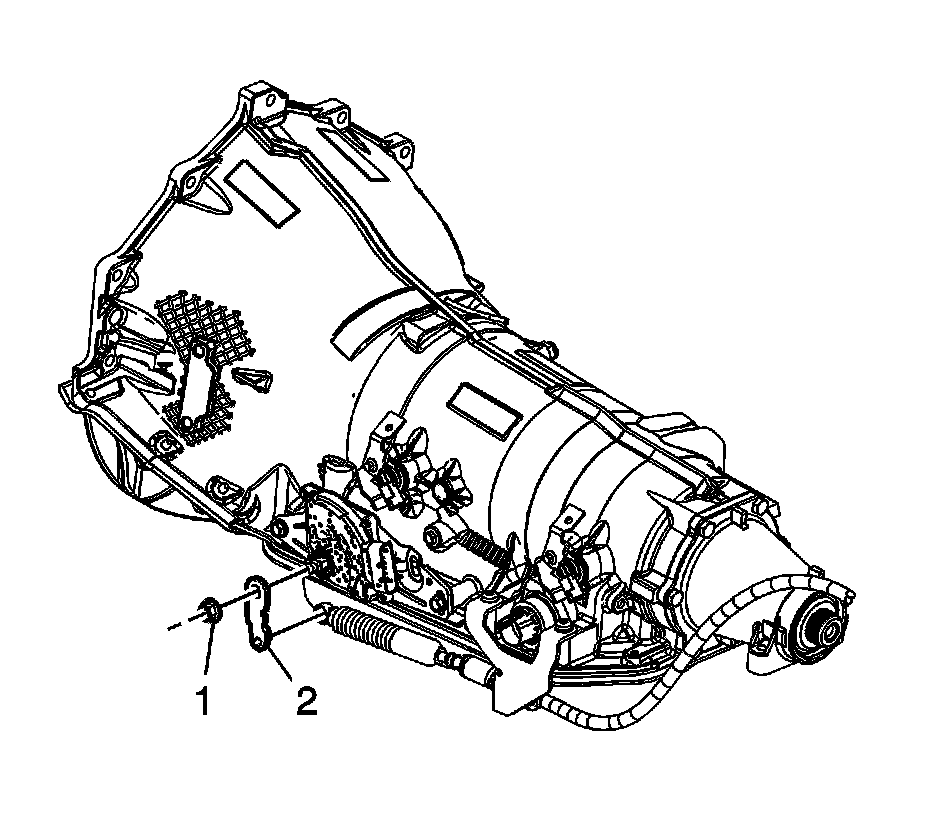
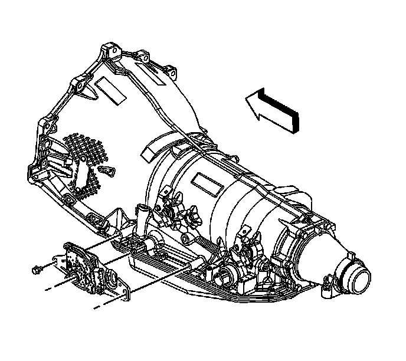
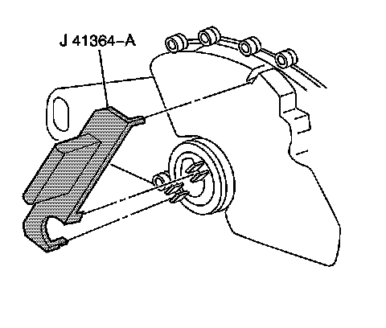

4L80-E/4L85-E - Automatic Transmission
Park/Neutral Position Switch Replacement
Tools Required
J 41364-A Park/Neutral Switch Aligner
Removal Procedure
1. Apply the park brake.
2. Shift the transmission into Neutral.
3. If equipped with 4-wheel drive (4WD), remove the front propeller shaft.
4. Raise and suitably support the vehicle. Refer to Lifting and Jacking the Vehicle.

5. Disconnect the park/neutral position (PNP) switch electrical connector (1).

6. Disconnect the selector cable from the range selector lever ball stud.
7. Remove the control lever to the manual shaft nut (1).
8. Remove the control lever (2) from the manual shaft.

9. Remove the PNP switch bolts.
10. Remove the PNP switch from the manual shaft. If the PNP switch does not slide off the manual shaft, file the outer edge of the manual shaft in order to remove any burrs.
Installation Procedure
1. Install the PNP switch to the manual shaft by aligning the switch hub flats with the manual shaft flats.
2. Slide the PNP switch onto the manual shaft until the switch mounting bracket contacts the mounting bosses on the transmission.
Important: If a new PNP switch is being installed, the switch will come with a positive assurance bracket. The positive assurance bracket aligns the new switch in its proper position for installation and the use of the park/neutral switch aligner will not be necessary.
3. Install the PNP switch bolts finger tight.

4. Position the J 41364-A onto the PNP switch. Ensure that the 2 slots on the switch where the manual shaft is inserted are lined up with the lower 2 tabs on the tool.
Notice: Refer to Fastener Notice.
5. Rotate J 41364-A until the upper locator pin on the tool is lined up with the slot on the top of the switch.
Tighten the bolts to 25 N.m (18 lb ft).
6. Remove J 41364-A from the PNP switch. If installing a new switch, remove the positive assurance bracket at this time.
7. Install the control lever to the manual shaft with the nut.
Tighten the nut to 25 N.m (18 lb ft).
8. Install the control lever (2) to the manual shaft.
9. Install the control lever to the manual shaft nut (1).
Tighten the nut to 25 N.m (18 lb ft).
10. Connect the range selector cable to the range selector lever ball stud.
11. Connect the PNP switch electrical connector (1).
12. If equipped with 4WD, install the front propeller shaft.
13. Lower the vehicle.
14. Check the PNP switch for proper operation. The engine must start in the Park (P) or Neutral (N) positions only. If proper operation of the switch can not be obtained, replace the switch.